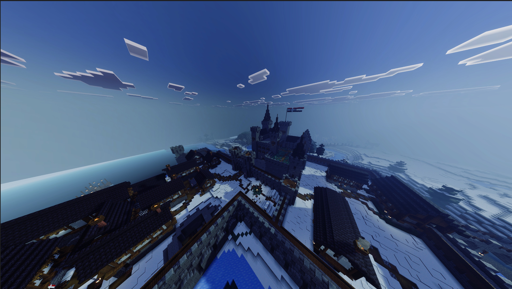
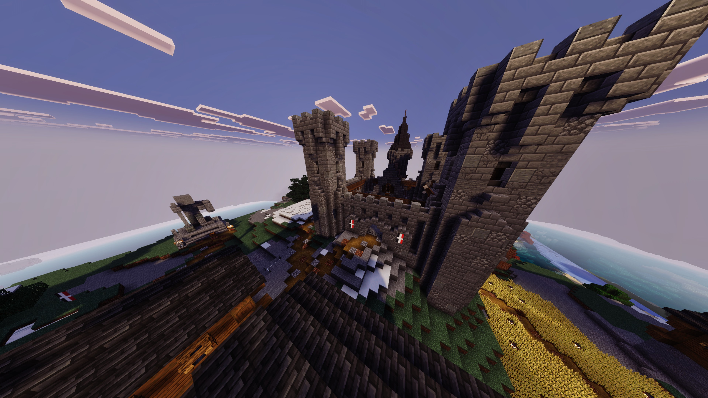

The Divisions
Valorianische Luftwaffe
Die Fliegertruppe des ReichesThe Luftwaffe operates elytra-based aerial units for spying and cartopgraphy from above.
Current Units
Requirements for Enlistment
- Demonstrated mastery of elytra flight and maneuvering
- Ability map lands and sectors with pinpoint accuracy from altitude
- Pass the Fliegerprüfung (Pilot's Exam) — practical flight test and tactical assessment
- Complete basic Infranterie training
- Clean disciplinary record; loyalty to the Crown required
Valorianische Infanterie
Die Fußtruppe des ReichesOur infantry are the ground troups. Trained in close combat, ranged comabt, siege warfare, and territorial defense.
Combat Doctrine
Requirements for Enlistment
- Proficiency in PvP combat and tactical movement
- Willingness to serve garrison duty at royal installations
- Ability to operate in coordinated squad formations
- Completion of Grundausbildung (Basic Training) at Dettermark
Strategic Installations

Die Königliche Festung
The King's Castle, primary garrison for city defense and coastal watch. Infantry rotations guard the capital and the ocean approaches.

Die Bergfestung
Mountain Village Castle conceals a military base. Strategic reserve and fallback position in case of war.

Stützpunkt UUR Determa
The UUR base. Both Luftwaffe and Infanterie train and operate from this advanced, fully functional UUR military installation.

Flugplatz Dettermark
Elytra Launch Zone build by the UUR. Undetected takeoff and landing facility for Luftwaffe operations. Designed for stealth deployment.

Die Schießstände
Infantry training trenches at Dettermark. Live-fire drills, formation practice, and combat simulations held regulary.
Der Weg zur VIS
The Valorian Internal Service (VIS) works in close concert with the military. Exceptional service in either the Luftwaffe or Infanterie may earn recommendation for VIS advancement.
Those who distinguish themselves through bravery, tactical brilliance, or unwavering loyalty may be invited to join the elite ranks of the VIS.
Advancement is by merit only. No titles, no favours. Only proven skill and devotion to Valoria.
Subdivision of the United Union of Republics (UUR) Military
Valorian forces operate under UUR collective defense obligations per Article V of the Constitution
Enlist Today
The realm has need of capable hands and brave hearts. Whether you take to the sky or stand the line, your service will be rewarded. Compensation is discussed in private upon acceptance — based on skill, mission assignment, and length of service.
Submit Enlistment PapersWages are negotiated privately after acceptance. Promotion to VIS possible for exceptional service.